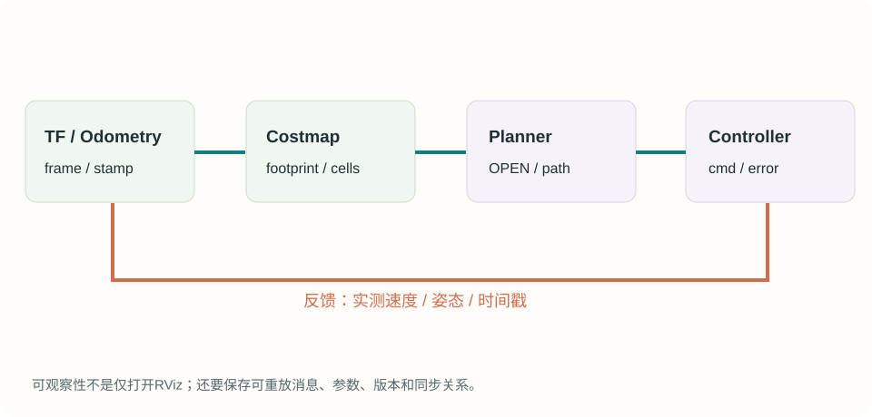

可视化与调试：为什么最终那条彩线远远不够？
把算法运行拆成地图、搜索、路径与执行四层证据；通过 A* 事件日志、路径不变量和 TF 时间同步找出真正的失效环节。
路径在图上绕开了障碍，却仍然可能是一段错误数据
一个导航系统可以同时表现出“路线显示正确”和“机器人无法安全到达目标”。原因可能不在搜索算法，而在地图与规划栅格的坐标换算、车体足迹、动态障碍更新时间、曲率执行能力或控制器跟踪误差。单看最终一条彩线很难定位这些问题。
可靠的调试思路是把规划过程拆成可观察的阶段：输入的地图与位姿 → 搜索状态与代价值 → 离散路径/轨迹 → 动作控制与执行反馈。每一层显示它真正使用的坐标系、时间戳、数据版本和数值范围，不通过颜色示意代替真正的算法日志。
PLANNER OBSERVABILITY / 23

同一张地图上至少要分别看四种数据
对栅格地图要检查分辨率、地图原点、轴方向和未知占据的含义。对图搜索要记录 OPEN / CLOSED、当前节点 g,h,f、父节点、松弛事件和终止条件。对输出路径要检查相邻点连通、足迹碰撞、长度与曲率。对执行端则要记录时间参数化轨迹、期望速度、实际里程计以及误差。
| 层级 | 最重要的叠图对象 | 需要同时记录的元数据 |
|---|---|---|
| 地图 | 障碍、未知、膨胀层、起终点 | 分辨率、原点、时间戳、frame_id |
| 搜索 | OPEN、CLOSED、g/f 热力图、父指针 | 搜索步、启发式、边代价、去重策略 |
| 路径 | 几何折线、车体扫掠、最近障碍净空 | 坐标、最小曲率半径、碰撞检查版本 |
| 执行 | 期望轨迹、实测位置/速度、规划更新时间 | 控制周期、延迟、TF 链与安全触发 |
PLANNER OBSERVABILITY / 23
对 A*，f 数值的变化是极好的算法单元测试
在单位代价四邻域栅格上，曼哈顿启发式 h(x,y)=|x−x_g|+|y−y_g| 是一致的。当算法从最小 f 的堆中取出有效条目并扩展时，弹出节点的 f 序列应非递减；父节点形成的最终路必须由合法相邻状态组成。这些不变量能检测多种“图看上去差不多，但代码错了”的情况。
如果使用不一致的启发式、负边权或其它非标准图搜索策略，上述 f 单调性不能直接作为通用规则；如果允许 reopen，也必须审查 CLOSED 的语义。对于本章固定的非负单位边代价与一致启发式，检查 f 单调性才是恰当断言。
PLANNER OBSERVABILITY / 23

应该保存可重放的结构化日志，而不是截图合集
一个可重放的搜索事件至少包含 run_id、map_hash、algorithm_config、seed、step、state、g、h、f、parent、action。需要清晰区分不同事件：节点被插入 OPEN、候选松弛更新、更优路径重开、堆中过期记录丢弃、节点最终扩展、目标弹出及失败终止。
日志中的浮点代价应保留足够精度，避免显示格式截断误差影响后续复核；同一次运行必须固定坐标系和地图版本。面向浏览器的展示数据可以做抽样，但原始诊断日志应保持顺序和事件语义完整。
几类极常见的“看似正常”异常
- 坐标或单位混淆：栅格下标与世界米数直接相加，地图原点方向颠倒，或将 ROS 2 不同类型的 costmap 代价值混用。
- 启发式与边代价不匹配：四邻域拿对角成本，或者将障碍代价算进 g 却不更新启发式适用条件。
- 碰撞检测只看端点：跨墙连边、斜向切角和车辆扫掠体遗漏。
- 状态缓存与时间问题：复用旧地图的 OPEN/CLOSED，TF 时间戳过期，局部 costmap 与控制时刻不一致。
出现路径“抖动”不应立刻把平滑系数调大；应先检查规划输入是否跳变、轨迹重规划频率是否与控制周期冲突、机器人状态估计是否在不同坐标系间切换。
交互：根据异常现象选择第一条证据链
这是诊断索引，不是自动故障诊断。切换现象可以查看建议第一步检查的数值与来源；页面仍需结合真实日志推导原因。
路径穿墙：检查边碰撞、足迹膨胀、四/八邻域切角规则和地图原点。
每个选项只是定位问题所需的首批证据，不保证唯一根因。
生成一个带真实不变量的 A* 扩展事件序列
Python 3.10+，仅标准库。示例在 7×5 四邻域栅格上设置一堵仅底部有入口的墙，记录每个有效弹出状态的 g,h,f 与堆大小。断言检验路径必须经过唯一缺口、所有连续步长度为 1、最后的 g 与实际步数一致、弹出的 f 非递减、没有重复有效扩展。
from heapq import heappush, heappop
from itertools import count
WIDTH, HEIGHT = 7, 5
blocked = {(3, y) for y in range(4)}
start, goal = (1, 1), (5, 1)
def heuristic(q):
return abs(q[0]-goal[0]) + abs(q[1]-goal[1])
def neighbors(q):
x,y = q
return [p for p in ((x+1,y),(x-1,y),(x,y+1),(x,y-1))
if 0 <= p[0] < WIDTH and 0 <= p[1] < HEIGHT
and p not in blocked]
def instrumented_astar():
serial = count()
opened = [(heuristic(start),next(serial),start,0)]
best, parent = {start:0}, {start:None}
closed, events = set(), []
while opened:
f,_,node,g = heappop(opened)
if g != best[node] or node in closed:
continue # Stale heap entry; not a valid expansion.
closed.add(node)
events.append({"step":len(events),"state":node,
"g":g,"h":heuristic(node),"f":f,
"frontier":len(opened)})
if node == goal:
route = []
while node is not None:
route.append(node)
node = parent[node]
return route[::-1], events
for nxt in neighbors(node):
improved = g+1
if improved < best.get(nxt,float("inf")):
best[nxt] = improved
parent[nxt] = node
heappush(opened,(improved+heuristic(nxt),
next(serial),nxt,improved))
raise RuntimeError("No path")
path, log = instrumented_astar()
assert (3,4) in path # Only opening through the wall.
assert all(p not in blocked for p in path)
assert all(abs(a[0]-b[0])+abs(a[1]-b[1]) == 1
for a,b in zip(path,path[1:]))
assert len(path)-1 == log[-1]["g"]
assert all(e["g"]+e["h"] == e["f"] for e in log)
assert [e["f"] for e in log] == sorted(e["f"] for e in log)
assert len({e["state"] for e in log}) == len(log)
print("route edges:",len(path)-1,"valid expansions:",len(log))
print("first event:",log[0])
print("final event:",log[-1])代码中的 frontier 是堆中原始条目数，可能包含过期项，因此不等于去重后的待搜索状态数。这样的命名和解释能防止看见“OPEN 长度变化”就错误推断算法扩展效率。
RViz 能显示什么，不能代替哪些检查
在 ROS 2 / Nav2 中，RViz 常用于叠加机器人模型、激光点云、全局/局部 costmap、全局路径、局部轨迹与 TF。可先确认所有视图的 Fixed Frame 与数据 frame_id 相匹配，再检查时间戳、里程计、地图到 odom 的定位变换，以及控制器的实际追踪误差。固定帧一旦设置错误，一张图可能看上去每条路线都平移了同一个偏差。
Nav2 的初始化与排错指南强调机器人足迹、传感器、TF 和控制器参数之间的一致性；前台日志/ROS bag 复放用于找到时间序列因果关系。RViz 显示效果很好不证明轮速命令安全，也不能替代离线碰撞有效性检查或真实车体测试。
PLANNER OBSERVABILITY / 23

参考文档
- Nav2 First-Time Robot Setup Guide：足迹、里程计、TF 与导航前置条件
- Nav2 Setting Up Transformations：map/odom/base_link
- LaValle, Planning Algorithms：搜索、状态与运动约束